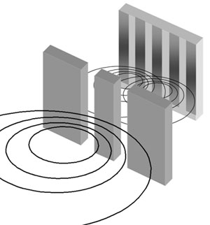
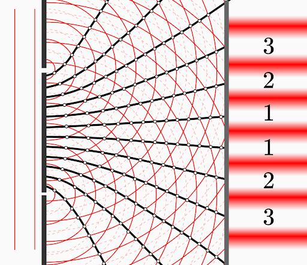
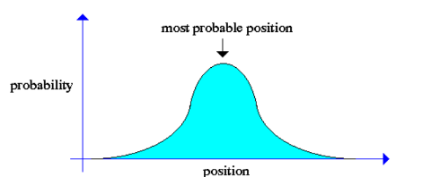

Quantum mechanics is a branch of physic that allows us to understand the world in a lower scale, this means that it studies and describes the behavior of atoms, molecules, protons and even electric circuits at nanoscale.
OERWF - Open Educational Resource for the Wave Function
Quantum Mechanics
Wave-particle duality
In quantum mechanics we can find that particles can behave as waves and that waves can behave as particles, in order to understand this phenomenon better, we must study the two-slit experiment. First we will see this experiment using classic waves and classic particles.

In both examples, we can see the difference between the particles and waves in classic physics. Meanwhile the particles clash in a specific position and can not occupy the same place at the same time, waves can interfere with each other, allowing them to add themselves or passing through, this means that there can be more than one wave at the same time that are spreading. Now with a quantum mechanic approach we will be able to look the particle-wave duality that light possesses.

It becomes visible how light behaves as a particle, but also as a wave. If light were only a particle, only two patches would be seen; and as light has a wave-like behavior it spreads. This is a visble representation of the wave particle dual state.
Wavefunction behavior
When talking about the behavior of the wavefunction, we must break down word by word to know what it means before mixing them up, first of all, the behaviour is the way in which a natural phenomenon works, the wave is anything that have a “round trip” shape, like when you throw a rock in the water, finally a function is the relationship between a set of numbers, but, we can think of them as mathematical machines where you put a set of numbers and throws a result that depends on the initial set.
Therefore, the wavefunction is a graphic function that looks like a wave, in this way the wavefunction does not seem so complicated, but when we introduce the behavior in a quantum context, it becomes quite difficult. A wavefunction is the graphic representation of the interdependence of a data set with respect to a particle, where the input can be a measurable property, the position of the particle, what is the particle doing or in which moment something can happen and the result becomes more complex. We can not know anything exactly, but instead we can predict the probability of the properties that we can introduce.
And, why must it be a wave? The wave gives us a prediction with the best possibilities for a particle. If we imagine that we want to know in which part a particle could be in a one dimensional box, the way wavefunctions behave will tell us where the particle could be only by looking at it.
Only by looking, we can say that the most possible place where the particle could be is in the center and not in the borders, but this does not give us a probability, only a general idea about the possible position of the particle. In order to make this even more complex the wave function not only goes up and down, it is rotating through real and imaginary numbers, the combination of these numbers is called complex space.

Work published with Creative Commons License Attribution-ShareAlike 4.0 International